Banana Slug
You'll find Sammys everywhere, but this spot is always a good place to spot one after it rains!
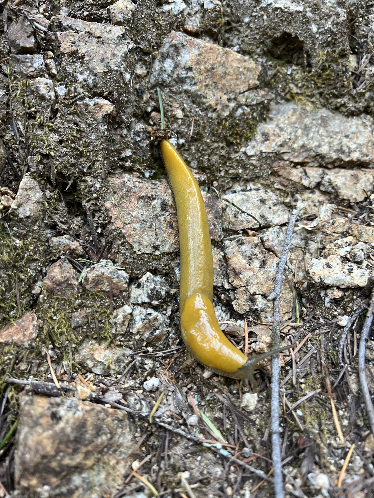Google Earth
Deer
Deers love our campus! You'll be sure to find a family of deer here during your days on campus.
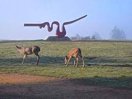Google Earth
Squirrels
Squirrels are absolutely everywhere! You'll see at least 5 on your walk to class.
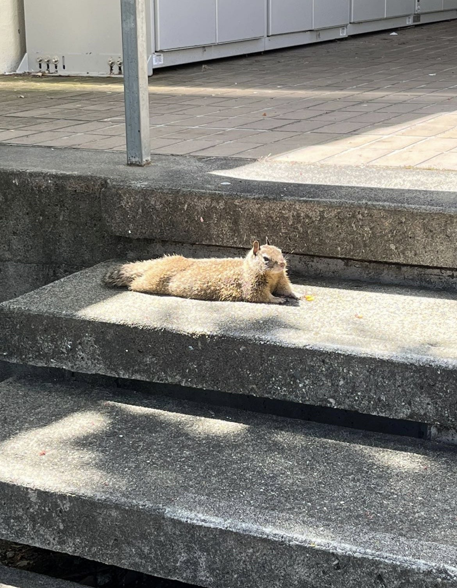Google Earth
Porter Study Room
This study room has couches, tables, and plenty of outlets. It also has a view of the Porter Squiggle and is an awesome people watching spot.
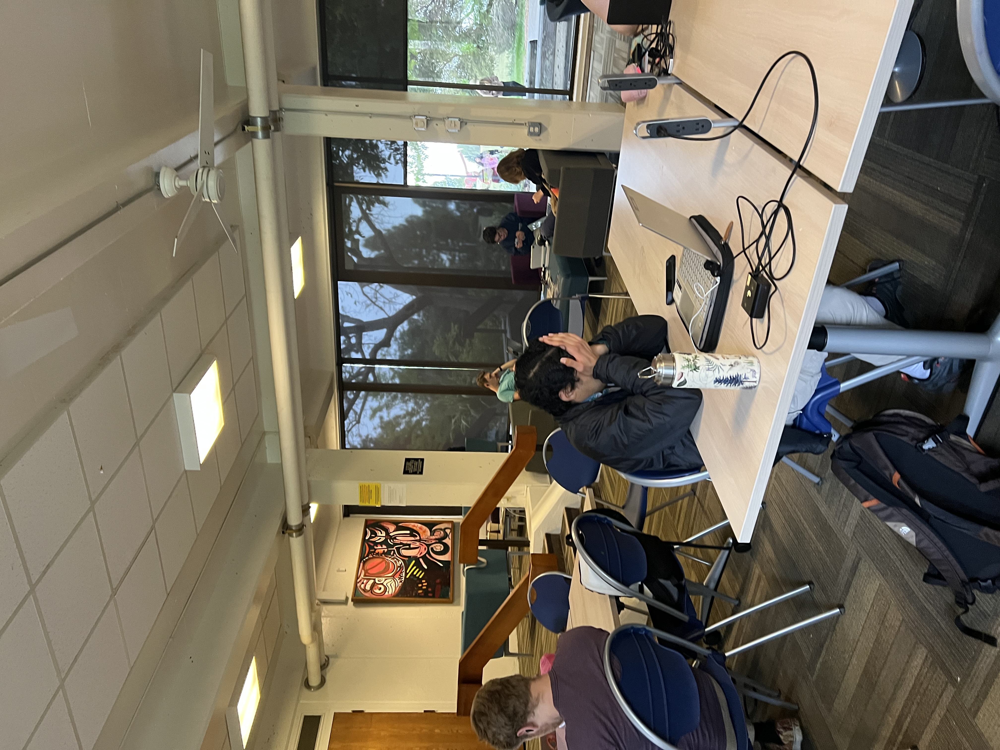Google Earth
Science and Engineering Library
This library has 3 floors, and is perfect to work on group projects. It has beautiful views of trees and is a great place to pretend to be a STEM major.

Google Earth
Stevenson Library
This library is ideal for extremely quiet studying. It's especially nice to be in when it’s raining.
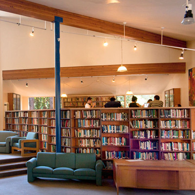Google Earth
Namaste Lounge
This study room has floor to ceiling windows with couches, tables, and a piano for you to practice on.
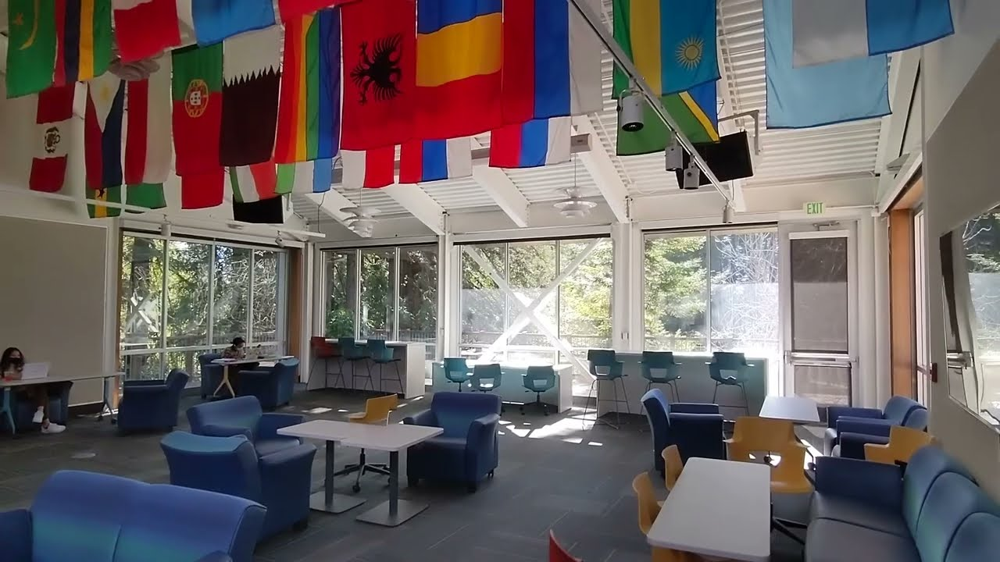Google Earth
Terry Freitas Commons
This lounge has a pool table, piano, couches, tables, practically everything you could want. It doubles as a food pantry, so there’s always free snacks, hygiene products, and non-perishables available!
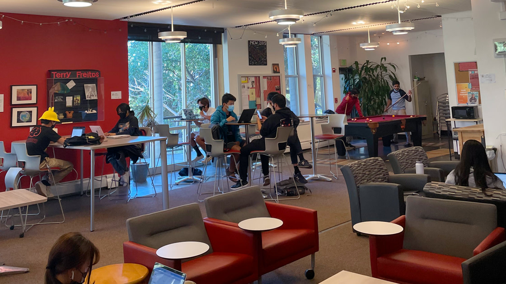Google Earth
Mchenry Library
With 5 floors, this is UCSC's biggest library! With a cafe inside, tons of different places to study, and gorgeous views, you’ll be sure to find your new favorite study spot here. Floors 0, 1, and 4 are the most quiet, and levels 2 & 3 are the most lively.
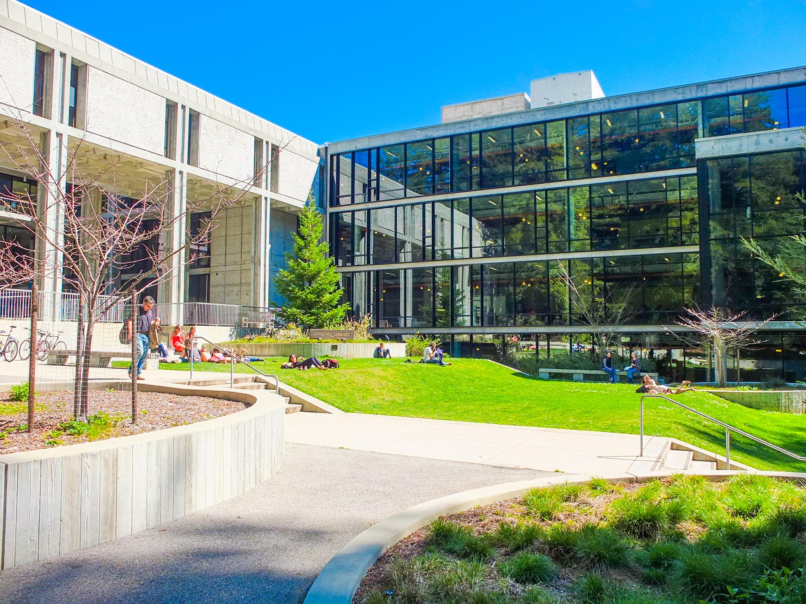Google Earth
Perk Coffee Bars
There are 4 Perk coffee bars! Baskin Engineering, Physical Sciences, Earth and Marine Sciences, and the 9/10 dining hall all have one of these coffee bars. These cafés are super convenient to grab a quick snack and a drink on the go. They all have baked goods, bottled drinks, and plenty of hot and cold drinks to enjoy.
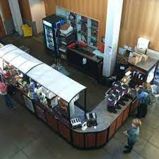Google Earth
Perk Coffee Bars
There are 4 Perk coffee bars! Baskin Engineering, Physical Sciences, Earth and Marine Sciences, and the 9/10 dining hall all have one of these coffee bars. These cafés are super convenient to grab a quick snack and a drink on the go. They all have baked goods, bottled drinks, and plenty of hot and cold drinks to enjoy.
Google Earth
Perk Coffee Bars
There are 4 Perk coffee bars! Baskin Engineering, Physical Sciences, Earth and Marine Sciences, and the 9/10 dining hall all have one of these coffee bars. These cafés are super convenient to grab a quick snack and a drink on the go. They all have baked goods, bottled drinks, and plenty of hot and cold drinks to enjoy.
Google Earth
Perk Coffee Bars
There are 4 Perk coffee bars! Baskin Engineering, Physical Sciences, Earth and Marine Sciences, and the 9/10 dining hall all have one of these coffee bars. These cafés are super convenient to grab a quick snack and a drink on the go. They all have baked goods, bottled drinks, and plenty of hot and cold drinks to enjoy.
Google Earth
Porter Market
Porter Market has lots of fresh, frozen, and dried foods for you to shop for. There’s also hygiene products, snacks, and a café here! This mini grocery store takes Slug Points, Flexi$, and card.
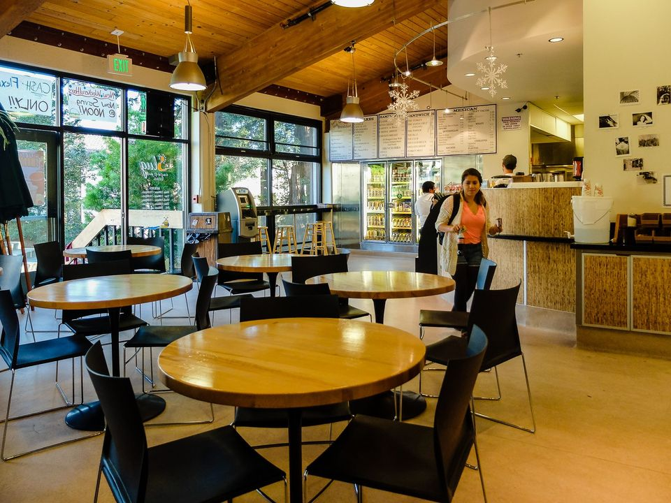Google Earth
Merrill Market
Merrill Market is newly opened, and is a grocery store and café wrapped into one. They have food, drinks, hygiene, and cleaning products here! This mini grocery store takes Slug Points, Flexi$, and card.
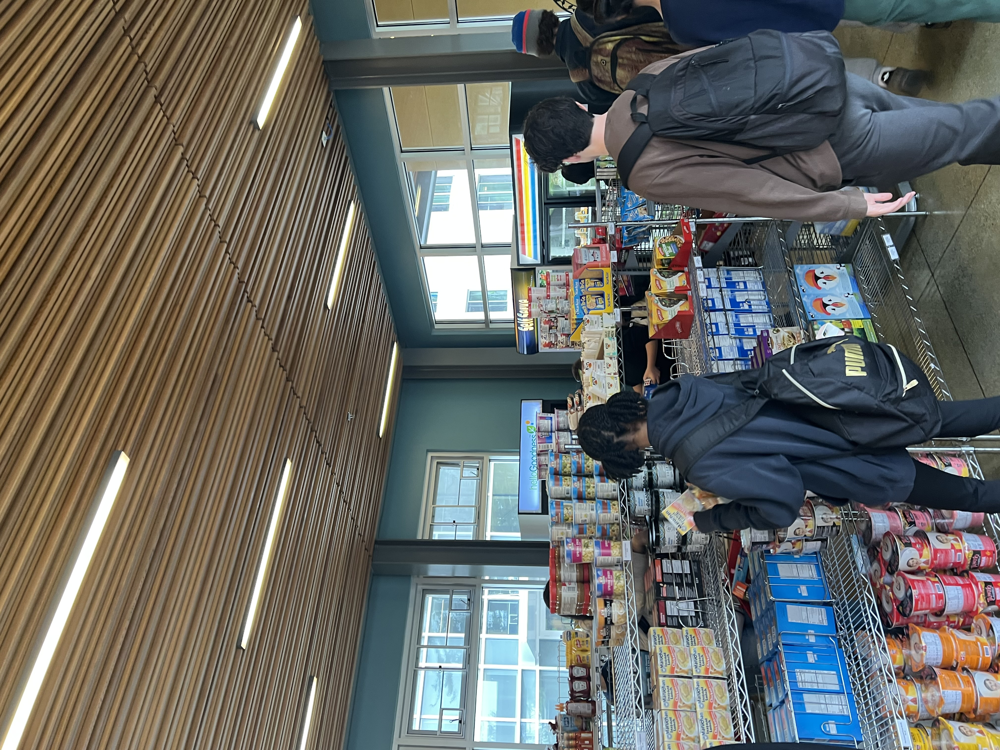Google Earth
Cowell Coffee Shop
Cowell Coffee Shop is one of free dining options on campus offered to students. It’s goal is to fight food insecurity. They serve juice, teas, coffee and an assortment of premade food options all available to students for free.
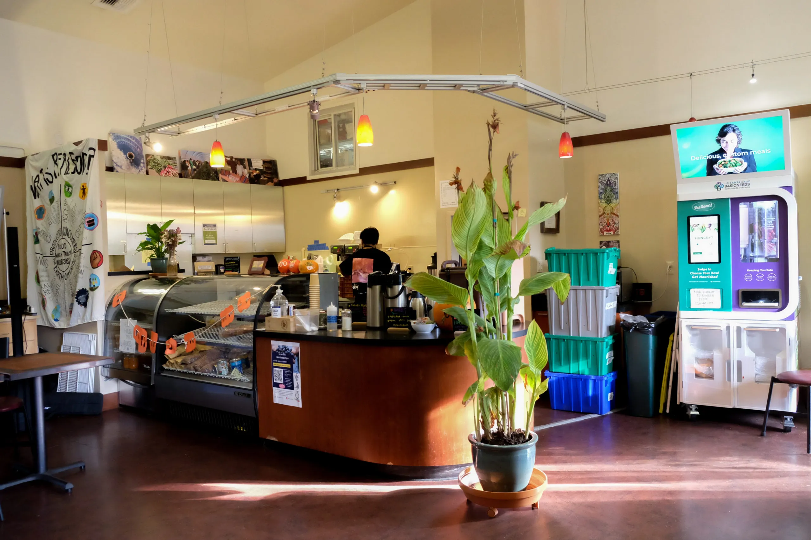Google Earth
Global Village Café
The Global Village Café is nestled in the second floor (or by the main entrance) of McHenry Library, and has the best avocado toast around! Make sure to get here early, though, as the line is always long after 12pm.

Google Earth
Oakes Café
Oakes Café is a student favorite on campus. They offer fresh, hot, restaurant-style food like burgers, rice bowls, and chicken tenders here!
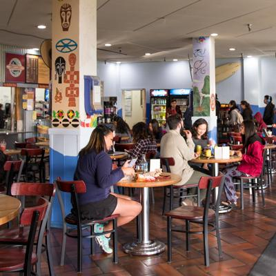Google Earth
Stevenson Coffee House
Stevenson Coffee House is a homey café with sandwiches, smoothies, baked goods, and more! The music is always good here, and is a great place to catch up with friends.
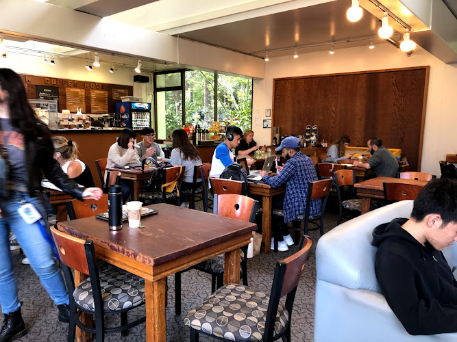Google Earth
Porter Squiggle
This is one of UCSC’s most iconic landmarks. Students love to lounge on the squiggle, just be careful getting up & down.
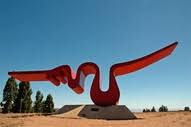Google Earth
East Field
The East Field has some of the best views on campus! Come snap a picture playing volleyball or doing a cartwheel with the sunset in the background!
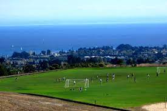Google Earth
Oakes Lower Lawn
The Oakes lower lawn is one of the best spots to get an ocean view on campus! Picnics down here are unmatched.
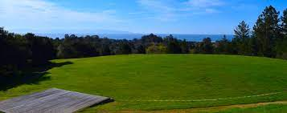Google Earth
College 9 Murals
The college’s theme, International and Global Perspectives, is reflected in these gorgeous murals that you can find all up College 9 Rd.
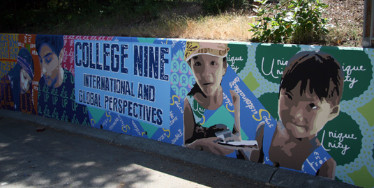Google Earth
Campus Main Entrance
At the base of campus, you’ll find our iconic entrance sign. Pretty much every student takes their grad pictures here, and it’s guaranteed you’ll get a great shot here!
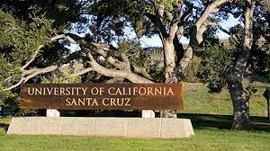Google Earth
Turkeys
Turkeys are common all year round here! Don’t get too close or they might gobble at you!
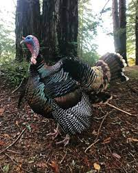Google Earth
Koi Fish
Koi Fish can be found outside the Porter Study Room, or down the Pogonip hill. These fish love visitors, but don’t feed them!
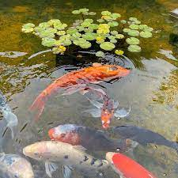Google Earth